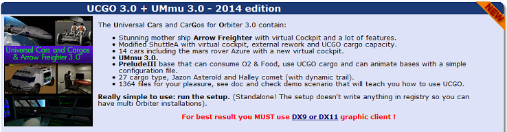
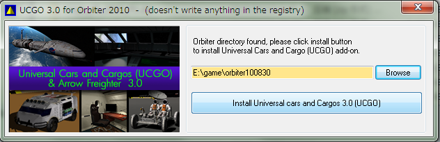
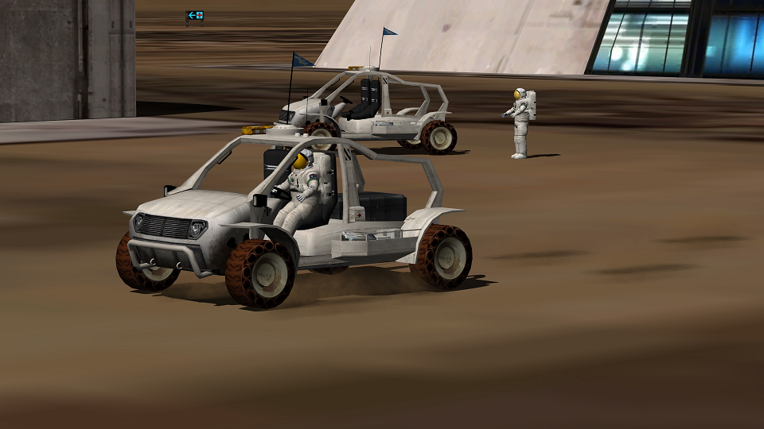

UMMU+UCGOのインストールと特徴
Orbiter2016について
UMMU・UCGOはOrbiter2016に対応していません。
UMMU・UCGOを使用する場合は、Orbiter2010をインストールしてください。
ダウンロード+インストール
ダウンロードは以下のリンクから。
UCGO 3.0 + UMmu 3.0 - 2014 edition

ダウンロードしたファイルをダブルクリック。

Browseボタンをクリックして、Orbiterのインストールフォルダを指定する。
下のInstallボタンをクリックすると、自動的にインストールされる。
UMMUの特徴
UMMU(Universal MMU)は、Orbiterに宇宙飛行士を追加するMODです。
- 宇宙遊泳をしたり、惑星表面を歩いて移動したりできる。
- ターボパックを使って飛行したり、パラシュート降下したりできる。
- 荷物やほかの飛行士を持ち上げて運ぶことができる。
- 宇宙服を脱ぐことができる。
- 酸素（場合によっては食料）を消費する。酸欠になると死亡する。
- 熱や衝撃などのパラメータがあり、限界を超えると死亡する。
- UMMUに対応した宇宙船・ステーションに搭乗することができる。
Arrow Freighter、DG4、XR2、Shuttle Fleetなど、有名MODの多くがUMMUに対応しています。※
※ただし、UMMUは手足を曲げることができないため、一部のMODでは独自に宇宙飛行士を実装しています。
UCGOの特徴
UCGO(Universal Cars and Cargo)は、UMMUに対応した貨物コンテナ・車両・基地を追加するMODです。
コンテナの中身には、酸素・燃料に加えて、建設資材などが存在し、宇宙基地の維持・建設ミッションを自作することができます。
コンテナのほかに、UCGOには自動車や宇宙基地などが含まれています。
UMMUを車に乗せて運転したり、UMMUを基地に収容したり、基地や燃料補給車から近くの宇宙船に補給を行うことができます。

関連動画
こちらの動画もあわせてご覧ください。